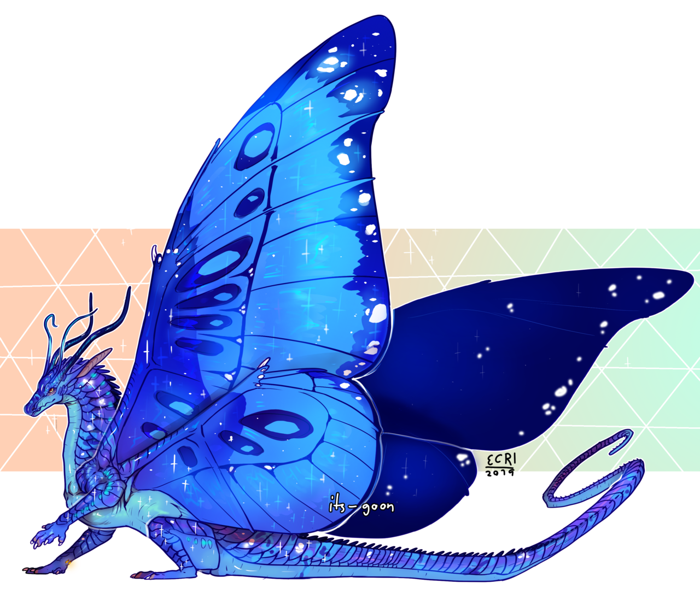

The Dragon Tribes
There are ten dragon tribes in total, seven in Pyrhhia and three in Pantala. Here is a list describing each tribe and their abilities:
Pyrrhia
Mudwings
Mudwings are many different shades of brown and dark orange with sometimes dappled scales. They are the largest and strongest of the dragon types, although they don't have many abilities. They can breathe fire when warm enough, can hold their breath for an hour, and can easily camouflage in mud and dirt thanks to their colour. Mud also has the power to heal their wounds. They are omnivores and have a big appetite.
Seawings
Seawings are short and have compact bodies. They are many different shades of blue, green, purple, and coral. The markings along their bodies allow them to speak underwater, which is a language called “Aquatic”. They cannot breathe fire but instead have extremely powerful tails.
Icewings
Icewings are many different shades of silvery-gray, pale blue/purple, and white. They can withstand any amount of freezing temperature and have very sharp eyesight. Their claws are extremely sharp to be able to grip onto ice. Instead of breathing fire, they have “frost-breath†which causes frostbite on enemies. They become very weak when in hotter temperatures.

Sandwings
Sandwings are many different shades of yellow, light brown, gold, and off-white. Their scales can also have many different patterns and designs. They have a scorpion-like barb at the end of their tail which poisons enemies. They can also breathe fire and can live off of little food and water.
Skywings
Their scales are shades of red, orange, and yellow. Their wings are the largest of any other dragons, which also makes them the fastest fliers. They are seen as short-tempered and violent. Skywings can breathe fire and have more resistance to the cold than any other tribe (other than Icewings). Skywings are also the only dragon tribe that can cause the condition called “Firescales†(You can learn more about it in the terminology page).
Nightwings
Nightwings are dark shades of colours including green, blue, and purple, as well as black. The underside of their wings looks like a night sky, which helps them blend in at night. They are nocturnal and can breathe fire. There are three moons in Pyrrhia, and nightwings hatched under one full moon have the power to read minds or see the future. Nightwings hatched underneath two get both abilities. Nightwings that are hatched underneath all three will get a stronger version of these powers.
Rainwings
Rainwings have bright and saturated colours from all across the rainbow. These scales can change colours, however, depending on their mood. They can also camouflage themselves to hide. They are seen as the laziest and weakest tribe, since they are more peaceful and spend time sun-bathing. However, rainwings have the ability to shoot corrosive venom at enemies. Their tails also allow them to swing easily from branches.
Pantala
Silkwings
Silkwing colours are iridescent and vibrant. They are born without any wings, and gain them once they undergo metamorphosis. Their antennae allow them to sense vibrations in the air, which allows them to predict weather conditions. After they undergo metamorphosis, they are given the ability to produce silk. Some silkwings can produce flamesilk, which is used to create glass and lamps. Silkwings are also great climbers.

Hivewings
Hivewings are many different shades of red, yellow, and orange. Many black scales are speckled throughout their body. Hivewing powers are different across dragons. Some are born with the power to shoot acid at the end of their tail, while others have venomous stingers on their wrists. Hivewings can also have venomous claws or teeth.
Leafwings
Leafwings are many different shades of green and brown. They can absorb energy from the sun and some have the ability to understand and speak to plants. They have exceptional knowledge on bugs and plants and many use them as weapons.